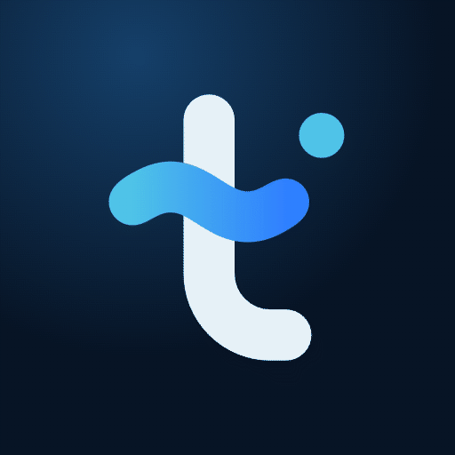
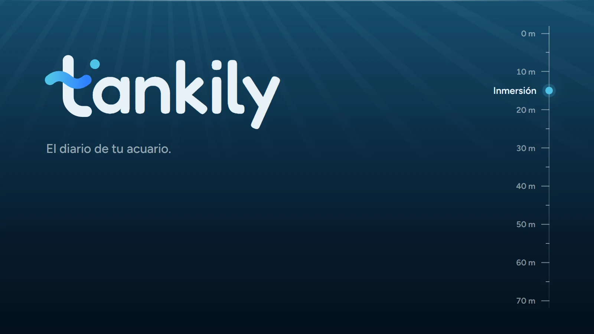
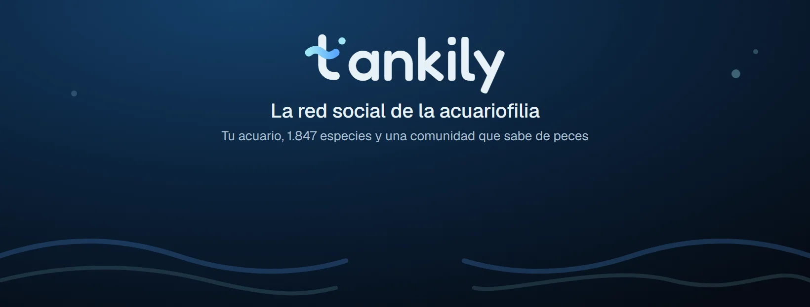
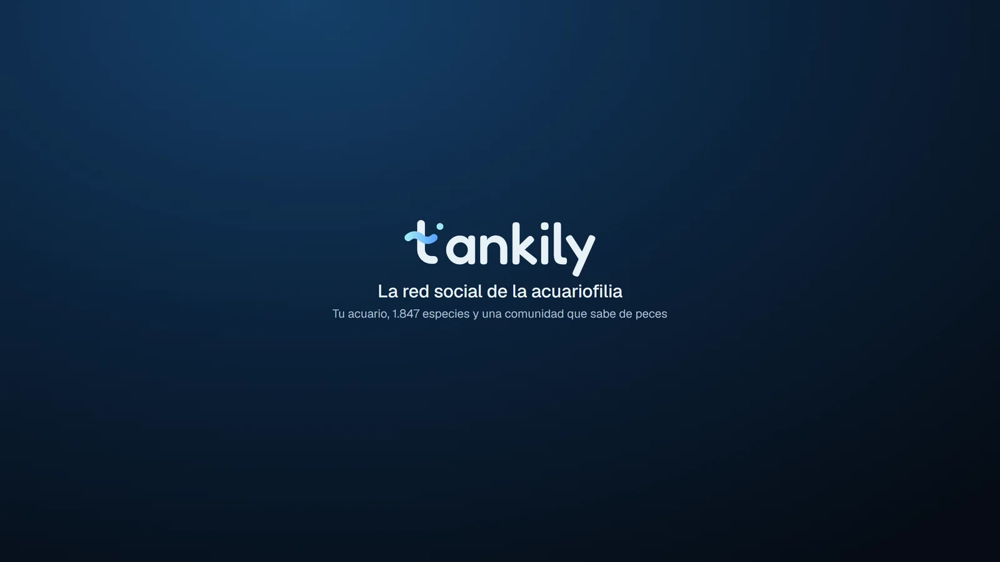

La inicial del nombre lleva el agua dentro
Tankily es la red social de los acuaristas. Cada persona registra sus acuarios y estanques, con sus habitantes, los parámetros del agua y el diario de mantenimiento. Alrededor están el muro, el foro, la compraventa entre aficionados, el directorio de tiendas y la enciclopedia WikiTank, en ocho idiomas.
El nombre une tank, tanque, con un final que suena a algo vivo y cercano. El símbolo cuenta lo mismo: una t con una ola y una burbuja que sube.
Una t dibujada a medida, y el resto en Fredoka
El logotipo es tankily en minúscula. La t se dibuja sobre una retícula de 64 unidades y el resto de letras es Fredoka 500, elegida porque su trazo redondo coincide con el de la t. La t también funciona sola como símbolo.
- Palo y colaTrazo de 9 unidades con extremos redondos. La cola gira con un radio de 12 y apoya en la línea base.
- OlaHace de travesaño: un periodo completo de onda de 30 unidades, con el degradado de la marca, de Agua a Azul ola.
- BurbujaOcupa el lugar del punto de la i. Su diámetro, 8 unidades, es la medida de referencia del espacio de respeto.
Logotipo donde hay sitio, símbolo donde no lo hay
El logotipo va donde hay espacio horizontal; el símbolo, en espacios cuadrados o muy pequeños: icono de app, favicon, avatar, menú plegado. La versión a una tinta no usa degradados y es la de impresión, grabado y bordado.

Avatar animadoLo que nunca se le hace al logotipo
Se usa siempre a partir de los archivos originales. Sobre fotos, va en una zona tranquila de la imagen o sobre una placa de cristal.
Un acuario de noche: abismo, cristal y un celeste escaso
La paleta sale de un acuario de noche: un fondo abisal casi negro con un matiz azul, superficies de cristal y el celeste de la superficie iluminada. El acento es escaso a propósito: marca lo que se puede pulsar. Si todo es celeste, nada destaca.
Cada tipo de tanque tiene su color de agua
La ficha de un tanque se tiñe con su color: un arrecife se ve azul y un plantado, verde. Son colores funcionales; identifican el tipo de tanque y no sustituyen al acento de marca fuera de su ficha.
Los estados siempre van con un icono o un texto, nunca solo con el color: un parámetro fuera de rango dice cuál y cuánto.
Fredoka solo para el nombre; Geist para todo lo demás
Así la única pieza tipográfica con carácter es la marca, y el contenido se lee limpio en cualquiera de los ocho idiomas.
Las unidades, siempre en el sistema del lector y con el formato de su idioma: 25,4 °C en español, 77.7 °F en inglés de EE. UU.
Mirar a través del vidrio de un acuario
La interfaz se construye con paneles semitransparentes sobre una luz de cáusticas, con un borde de luz degradado y un brillo fino en el canto superior. El radio crece con el tamaño de la pieza, y los botones siempre son píldoras.
Todo se mueve como el agua
Lo que aparece nace pequeño y deformado desde el botón que lo abre, se estira al pasarse de tamaño y se asienta con un muelle. Al irse, se aplasta un instante y se recoge.
Un acuarista con experiencia que te echa una mano
De tú, claro y concreto. Explica qué pasa y qué hacer, sin tecnicismos innecesarios y sin exagerar. En cada idioma se adapta a cómo hablan los aficionados de ese país.
¡Atención! Se ha detectado una anomalía en los parámetros.
Los nitratos están en 40 mg/l. Un cambio de agua del 30 % los bajará.
No hay datos disponibles.
Aún no tienes tanques. Crea el primero y apunta sus parámetros.
Lo sentimos, ha ocurrido un error inesperado.
No se ha podido subir la foto: pesa más de 10 MB. Prueba con una más ligera.
La marca, en la web y en redes


